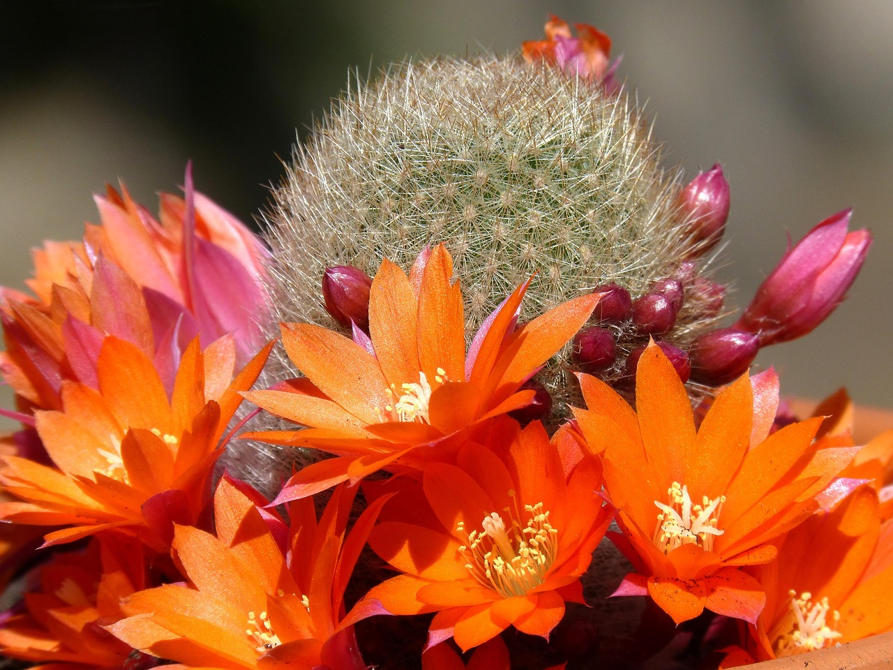

Diesel Systems.Viss dīzelu remontam.
Diesel Systems.Everything for diesel repair.
Diagnostika. Ritošās daļas remonts.
Diagnostics. Chassis repair.
Sprauslu un sūkņu pārbaude un restaurācija.
Inspection and restoration of nozzles and pumps.
Turbīnu remonts.
Turbine repair.

Sazinieties ar mums
Contact Us